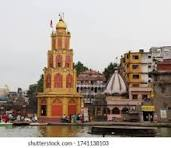

|
 |

|
|---|---|---|
त्र्यंबकेश्वर मंदिरत्र्यंबकेश्वर मंदिर हे नाशिक जिल्ह्यातील बारा ज्योतिर्लिंगांपैकी एक असून ब्रह्मगिरी पर्वताच्या पायथ्याशी वसलेले आहे. हे मंदिर तिसऱ्या पेशव्यांनी १७४०-१७६० दरम्यान बांधले. येथे गोदावरी नदी उगम पावते आणि हे मंदिर कालसर्प दोष निवारण पूजा आणि नारायण नागबळी विधीसाठी जगभर प्रसिद्ध आहे. |
पंचवटीपंचवटी हे महाराष्ट्रातील नाशिक शहरात गोदावरी नदीच्या डाव्या तीरावर असलेले एक प्रसिद्ध धार्मिक आणि ऐतिहासिक स्थळ आहे. या परिसराला 'पंचवटी' असे नाव पाच वटवृक्षांच्या समूहांमुळे मिळाले आहे. हिंदू महाकाव्य रामायणाशी याचा संबंध आहे, जिथे भगवान राम, सीता आणि लक्ष्मण यांनी वनवासाचा काही काळ येथे घालवला होता |
सुला व्हाइनयार्ड्ससुला व्हाइनयार्ड्स (Sula Vineyards) ही नाशिक, महाराष्ट्रातील एक प्रसिद्ध वाईनरी आणि द्राक्ष बाग आहे, ज्याची स्थापना १९९९ मध्ये राजीव सामंत यांनी केली होती. ही भारतातील सर्वात मोठी वाईन ब्रँडपैकी एक आहे आणि येथे पर्यटक वाईन चाखण्याचा अनुभव घेऊ शकतात. येथे विविध प्रकारची द्राक्षे वापरली जातात, जसे की चेनिन ब्लँक, सॉव्हिग्नॉन ब्लँक आणि रिस्लिंग. |

|

|

|
|---|---|---|
अंजनेरी किल्लाअंजनेरी किल्ला हा नाशिक-त्र्यंबकेश्वर रांगेतील एक महत्त्वाचा किल्ला आहे, जो भगवान हनुमानाचे जन्मस्थान मानला जातो. हा किल्ला नाशिकपासून सुमारे \(20\) किमी अंतरावर आहे आणि ट्रेकिंगसाठी प्रसिद्ध आहे. गडावर जाण्यासाठी पायऱ्यांची वाट आहे, जी अंजनेरी गावातून सुरू होते. |
काळाराम मंदिरकाळाराम मंदिर हे नाशिकच्या पंचवटीतील एक प्रसिद्ध मंदिर आहे, जे काळ्या दगडांमध्ये बनवलेल्या भगवान रामाच्या मूर्तीमुळे ओळखले जाते. हे मंदिर १७७८-१७९० दरम्यान पेशवे सरदार रंगराव ओढेकर यांनी बांधले होते आणि ते रामायणातील एका कथेनुसार भगवान रामाने वनवासात राहिल्याच्या जागेवर आहे. हे मंदिर केवळ एक धार्मिक स्थळ नसून, १९३० च्या काळाराम मंदिर सत्याग्रहामुळे सामाजिक सुधारणा चळवळीतील एक महत्त्वपूर्ण साक्षीदार देखील आहे, ज्याचे नेतृत्व डॉ. बाबासाहेब आंबेडकर यांनी केले होते. |
सीता गुफासीता गुंफा (सीता गुफा) ही नाशिकमधील एक प्रसिद्ध जागा आहे, जिथे सीतामाता वनवासात असताना राहिल्याचे मानले जाते. या गुंफेत एक मंदिर देखील आहे |